甲 → 乙 → 丙 三段式借名登記之法律分析
法律研究意見簡報
謝秉錡律師事務所
謝秉錡律師 劉靜芬律師 何博彥律師 林育正律師 陳儒學習律師
2026年8月
1/16
一、問題提出與案件事實
二、法律爭點
三、相關法律規定
四、實務見解分析
五、爭點分析（綜合判斷）
六、結論與建議
七、援引判決列表
2/16
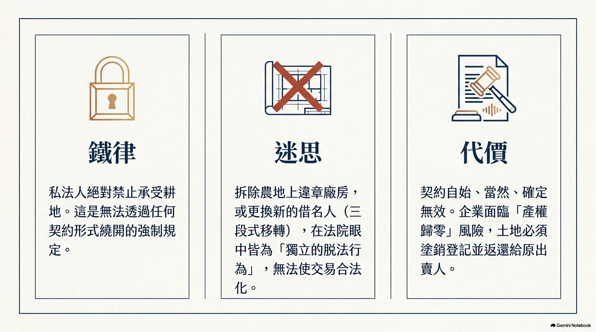
甲公司（私法人）
向第三人購買農地，原供作廠房使用；因私法人不得承受耕地，先借名登記於乙名下（第一段借名登記）
嗣廠房拆除
甲公司再要求乙將土地移轉登記予丙，成立甲、丙間之借名登記（第二段借名登記）
核心問題
三段式借名登記契約之效力如何？廠房拆除後是否影響效力？
3/16
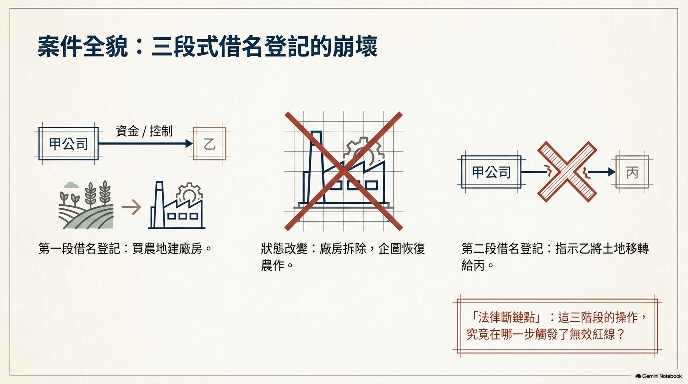
爭點一
第一段甲、乙間借名登記契約是否無效？
爭點二
第二段甲、丙間借名登記契約，是否因第一段無效而「連帶無效」？
抑或應獨立判斷？結論上是否仍屬無效？
爭點三
廠房拆除之事實，是否使契約轉為有效？
4/16
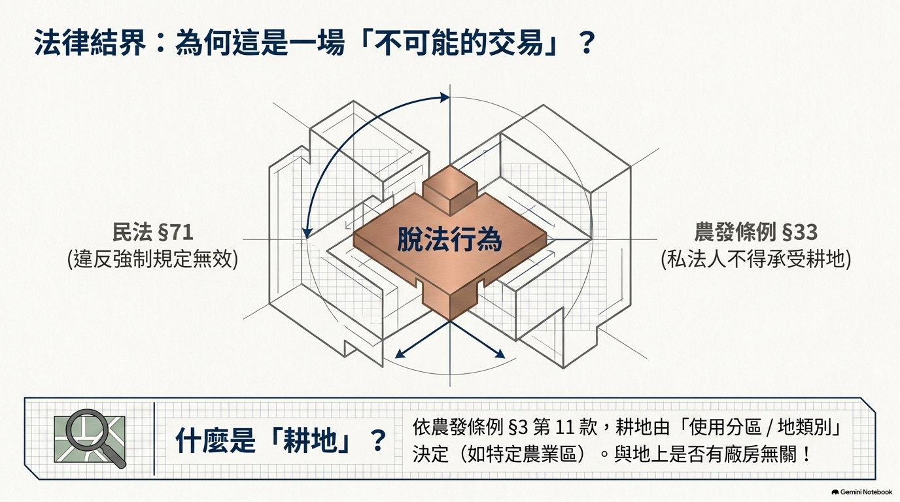
農發條例 §33 前段
私法人不得承受耕地。但符合第34條規定之農民團體、農業企業機構或農業試驗研究機構經取得許可者，不在此限
農發條例 §3 ⑪
耕地：依區域計畫法劃定為特定農業區、一般農業區、山坡地保育區及森林區之農牧用地
農發條例 §34
農民團體、農業企業機構或農業試驗研究機構，符合技術密集或資本密集類目及標準者，經申請許可後始得承受耕地
民法 §71
法律行為違反強制或禁止之規定者，無效。但其規定並不以之為無效者，不在此限
民法 §113
無效法律行為之當事人，於行為當時知其無效或可得而知者，應負回復原狀或損害賠償之責任
修正前土地法 §30
89年刪除前：「私有農地所有權之移轉，其承受人以能自耕者為限」→ 由農發條例 §33 承接
5/16
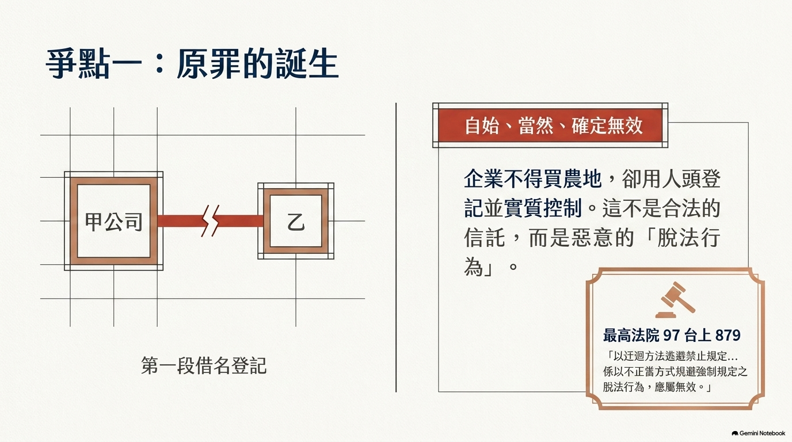
（一）第一段借名登記：脫法行為，依民法 §71 無效
最高法院 97 年度台上字第 879 號（事實高度雷同）
金恩公司（私法人）為興建工廠購買農地，借用有自耕能力之自然人登記並建廠房：
「顯係以迂迴方法逃避土地法第30條禁止規定…以不正當方式規避強制規定之脫法行為，應屬無效」
「無效之法律行為…不能因嗣後土地法之修正，取消農地承受人之資格限制，而認為有效」
臺灣高雄地院 106 年度重訴字第 21 號
「若私法人將耕地借名登記於與有自耕能力之自然人名下，而規避上開規定之適用，自屬脫法行為，該借名登記契約應屬無效」
6/16
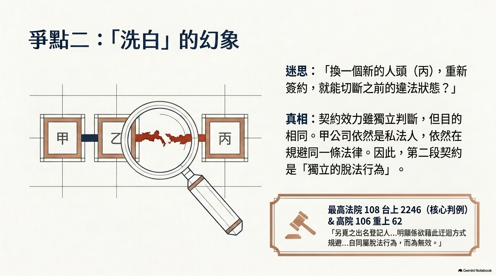
（二）第二段借名登記：效力獨立判斷，但本身仍屬無效
★ 高雄高分院 106 重上 62 ＋最高法院 108 台上 2246（事實最相似）
三英鋼鐵（私法人）借名登記於李金蓮名下 → 終止後將返還請求權讓與自然人股東請求移轉：
高雄高分院見解
「另覓之出名登記人…依前揭說明，與三英公司間就系爭土地另為借名登記之約定，亦非有效」「明顯係欲藉此迂迴方式規避三英公司不得承受農地之規定，自同屬脫法行為，而為無效」
最高法院 108 台上 2246（維持二審）
「回復之原狀，係塗銷受讓系爭土地之移轉登記…三英公司不得請求被上訴人將系爭土地移轉登記以為返還」
7/16
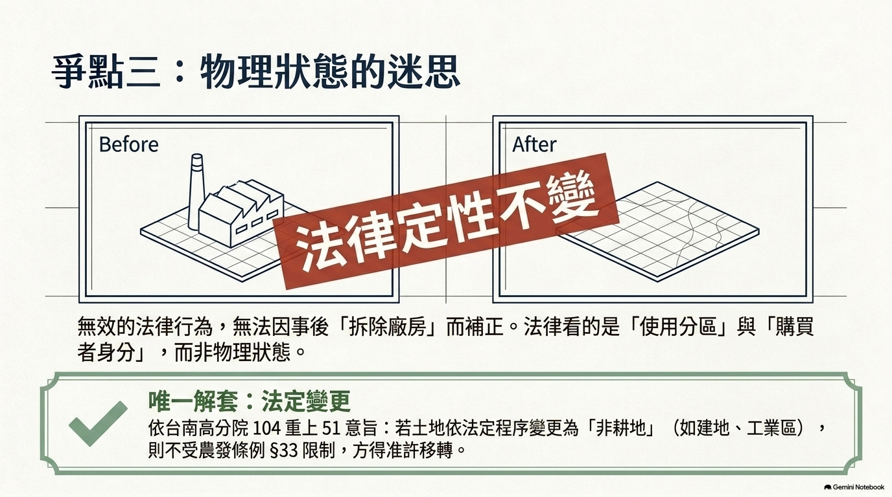
其他一致見解——更換出名人仍屬無效
高雄地院 106 重訴 21
請求移轉返還予其指定之第三人「更無異再次迂迴規避禁止規定，自屬於法不合」
臺中高分院 95 上更(一) 17
買賣契約或借名登記均屬無效，請求移轉予指定之登記名義人（股東）「即屬無據，不應准許」
臺南高分院 104 重上 51（最細緻區分）
出名人死亡改借名於繼承人：「仍屬脫法行為而無效」；改用不當得利請求「亦係規避法律規定之行為，不因改用不同法律請求依據而導致不同結論」
第一段無效 → 甲公司自始未取得權利，無從合法指示乙移轉予丙（民法 §113 僅得請求回復原狀）
8/16
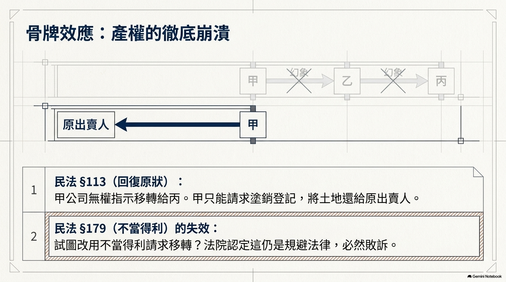
（三）廠房拆除之事實：不影響無效認定
1. 「耕地」以使用分區／使用地類別認定，非以地上物為斷
農發條例 §3 ⑪：特定農業區、一般農業區、山坡地保育區及森林區之農牧用地
廠房拆除僅改變「農地農用」事實狀態，不改變土地之法律定位
2. 無效不因事後狀態變更而補正
最高法院 97 台上 879：「不能因嗣後土地法之修正…而認為有效」
臺南高分院 104 重上 51：「自不因舊土地法第30條嗣經刪除而轉為有效」
→ 農發條例 §33 核心在於私法人承受耕地之身分限制，非僅防農地非農用
⚠ 例外：土地經法定程序變更為非耕地（建地、工業區等）→ 不受 §33 限制，可能回復有效
9/16
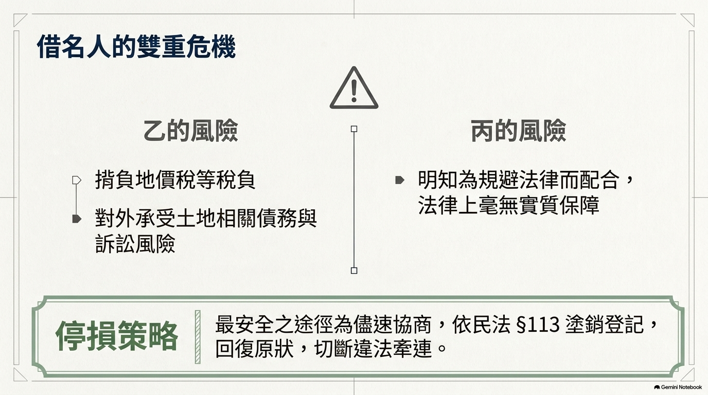
爭點一：第一段甲、乙間借名登記契約是否無效？
結論：無效
甲公司為私法人，不得承受耕地，卻借乙名義登記並供作廠房使用，構成以迂迴方法規避強制規定之脫法行為
法理依據
• 依民法 §71 本文無效，且為自始、當然、確定無效（縱當事人承認亦不能使其生效）
• 最高法院 97 台上 879、高雄地院 106 重訴 21 判決意旨
• 89 年前行為適用修正前土地法 §30；89 年後適用農發條例 §33，效果相同
10/16
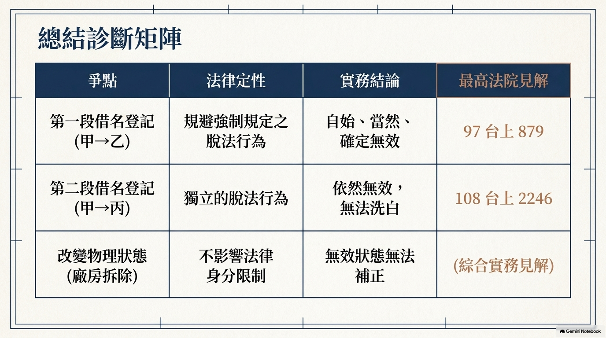
爭點二：第二段甲、丙間借名登記契約之效力？
結論：仍屬無效（獨立判斷，非被「連帶傳染」）
無效原因係「契約自身違反強制規定而獨立無效」，非因第一段契約無效即逕認當然無效
論證步驟
• 法律行為效力應各自獨立判斷，不能僅因第一段無效即逕認第二段當然無效
• 惟甲、丙間借名登記之實質目的，仍係使不得承受耕地之甲公司藉丙名義繼續實質保有耕地
• 以迂迴方式達成農發條例 §33 所禁止之相同效果 → 自身即屬獨立脫法行為而無效
• 僅更換出名登記人（乙→丙），無法改變脫法行為之本質
援引：高雄高分院 106 重上 62、最高法院 108 台上 2246、高雄地院 106 重訴 21、臺中高分院 95 上更(一) 17、臺南高分院 104 重上 51
11/16
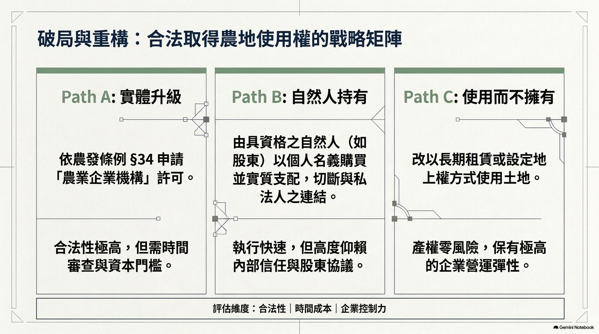
爭點三：廠房拆除是否使契約轉為有效？
結論：不影響
耕地之認定以使用分區／使用地類別為準，非以地上物為斷；無效不因事後狀態變更而補正
理由
• 耕地＝使用分區/使用地類別（農發條例 §3 ⑪），非地上物
• 最高法院 97 台上 879：「不能因嗣後土地法修正…而認為有效」
• 農發條例 §33 核心＝私法人承受耕地之身分限制；縱土地嗣後恢復農用，甲公司仍不得承受
✅ 唯一例外：系爭土地已依法定程序變更為非耕地（都市計畫或非都市土地使用管制）→ 不受 §33 限制，契約可能回復有效（臺南高分院 104 重上 51 反面意旨）
12/16
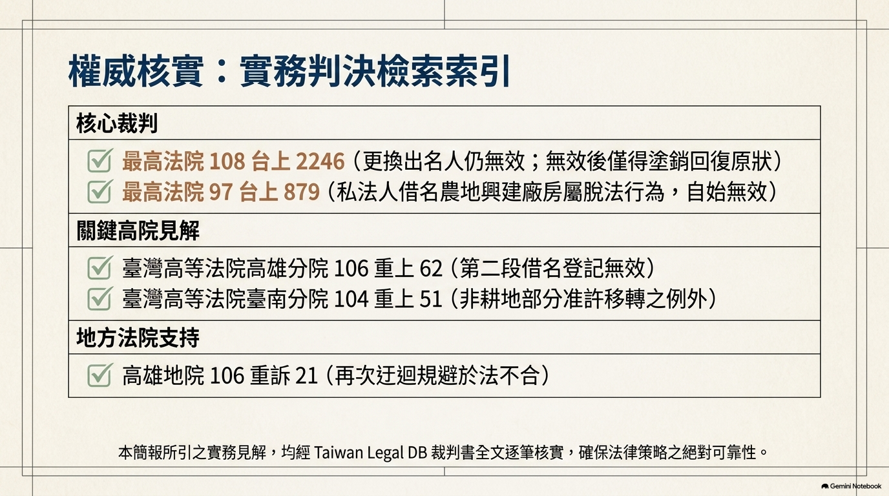
結論一
第一段甲、乙間借名登記契約無效
甲公司以迂迴方式規避「私法人不得承受耕地」之強制規定，屬脫法行為，依民法 §71 無效（自始、當然、確定無效）
結論二
第二段甲、丙間借名登記契約仍屬無效
非因第一段無效而「連帶無效」，而係其自身仍以迂迴方式達成同一禁止效果，獨立構成脫法行為而無效
結論三
廠房拆除不影響無效認定
限制重點在於私法人承受耕地之身分限制（依使用分區／使用地類別認定），惟土地已依法定程序變更為非耕地者結論不同
13/16
甲公司請求權
契約無效後僅得依民法 §113 請求回復原狀（塗銷登記回復原出賣人名義），不得請求移轉登記予自己或指定之人（最高法院 108 台上 2246）
換請求權基礎
依不當得利（§179）請求移轉登記仍屬規避法律規定，不因改用不同請求依據而異其結論；出名人另有 §180④、§125 時效抗辯空間
出名人風險
出名登記人仍為登記名義人，須負擔地價稅及土地債務風險；丙明知係規避而借名，無實質保障，建議依 §113 塗銷回復原狀
合法取得途徑
① 依農發條例 §34 申請承受耕地許可；② 具資格之自然人自行購買；③ 改以租賃、地上權等方式使用
訴訟策略
甲公司訴請移轉登記敗訴風險極高；出名人利害關係人應以「塗銷登記回復原狀」為正確訴之聲明
14/16
① 最高法院 108 台上 2246（109.03.11）— 更換出名人仍無效；無效後僅得塗銷回復原狀
② 高雄高分院 106 重上 62（106.11.15）— 「另覓之出名登記人」之第二段借名登記無效
③ 最高法院 97 台上 879（97.04.29）— 私法人借名農地興建廠房＝脫法行為無效
④ 高雄地院 106 重訴 21（107.01.17）— 請求移轉予指定第三人＝再次迂迴規避
⑤ 臺中高分院 95 上更(一) 17（95.06.27）— 買賣或借名登記均無效
⑥ 臺南高分院 104 重上 51（105.03.08）— 耕地部分無效；非耕地部分准許移轉（例外）
⑦ 最高法院 105 台上 1852（105.10.27）— 脫法行為定義（經 106 重上 62 轉引）
⑧ 最高法院 98 台上 76／990 — 借名登記契約定義與效力判斷基準
⚠ 全部判決均經 Taiwan Legal DB 調閱裁判書全文逐筆核實（依引用核實規則 8.2、8.4）
15/16
私法人不得承受耕地 —— 借名登記無法規避強制規定
謝秉錡律師事務所
謝秉錡律師 劉靜芬律師 何博彥律師 林育正律師 陳儒學習律師
2026 年 8 月
16/16